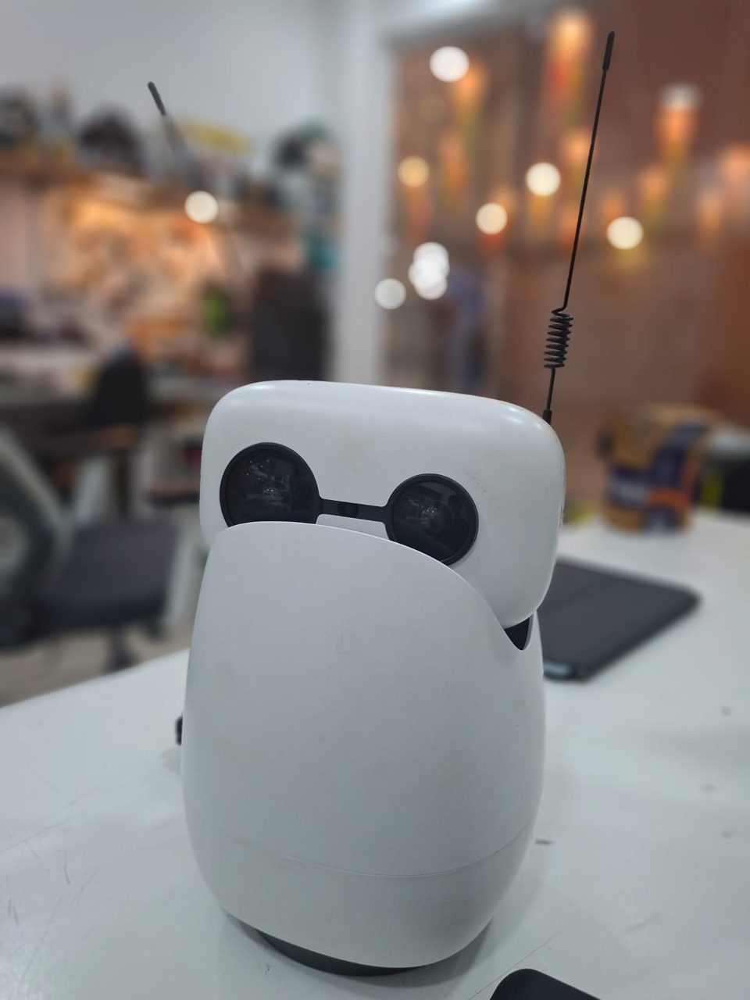

Ajay Ummadi › Projects › Reachy Mini
Project · Robotics
Reachy Mini
I assembled this Reachy Mini myself, and I know it inside out. Now I'm planning to build a new app for it and publish it on Hugging Face.

Build it yourself
I built mine, part by part.
Reachy Mini comes as a kit you assemble yourself. Here are the seven groups of parts I put together, from the antennas down to the base. Hover a part or a name to see what it does.
- 1AntennasTwo springy antennas that give the robot its expressive character.
- 2HeadThe rounded head shell that sits on top of the neck.
- 3ElectronicsThe camera and the board behind its eyes.
- 4BodyThe outer shell that wraps the mechanism.
- 5NeckThe linkage that lets the head tilt and turn.
- 6MotorsThe motors that drive the head's movement.
- 7BaseThe weighted base that keeps it steady on the desk.
Hands-on
I built it, so I know how it works
Assembled by me
I put this Reachy Mini together myself, so I've handled every part of it: the head, the camera eyes, the antenna and the body.
Embodied AI in practice
It's the same robot we use at MakerWorks Lab to teach embodied AI, covering vision and interaction.
Open source
Reachy Mini is open source, so developers can write their own apps and share them with the community on Hugging Face.
What's next
A new Reachy Mini app for Hugging Face
Status: planning
I'm planning a new app for Reachy Mini, to publish on Hugging Face so anyone with a Reachy Mini can try it. I'm still shaping the idea, so the details will be added here as it comes together.
FAQ
Questions
What is Reachy Mini?
Reachy Mini is an open-source, expressive desktop robot with a moving head, animated antennas and a camera, made for embodied AI and robotics experimentation.
Did Ajay Ummadi build this one?
Yes. Ajay Ummadi assembled this Reachy Mini himself and knows it in and out.
Is a Reachy Mini app coming?
Ajay is planning to build a new app for Reachy Mini and publish it on Hugging Face. It is in the planning stage, so details will be added here when it is ready.
Where is Reachy Mini used at MakerWorks Lab?
MakerWorks Lab in Mumbai runs embodied AI programmes on Reachy Mini, covering vision and interaction.